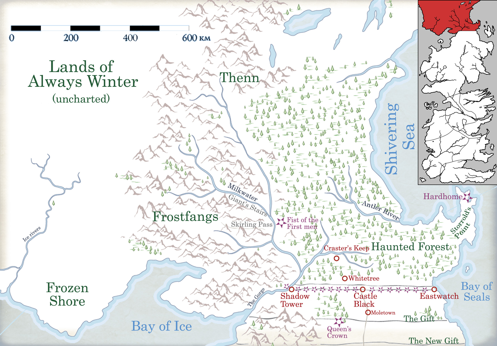

Nightfort
The Nightfort is one of the castles along the Wall. It is the only castle along the Wall where the steps up the side of the Wall were carved into the ice. It was abandoned by the Night’s Watch two hundred years before the War of the Five Kings. The last brothers to inhabit the castle were reassigned to Deep Lake. It sits between Icemark to the west and Deep Lake to the east. It was the first castle on the Wall, and the largest. With the dwindling of Night’s Watch power it became three-quarters empty and too costly to maintain. When Good Queen Alysanne Targaryen suggested to pay for a new smaller castle, the Watch agreed to abandon it. The new castle, Deep Lake, was paid for by the queen’s jewels and built by men that King Jaehaerys I sent north. Once the new castle was completed, the Nightfort was abandoned.
Three hundred years before Aegon’s Landing, the commanders of the Nightfort and Snowgate went to war with each other. Eventually, both lost their heads to the Starks of Winterfell.
It is remembered in scary stories of the North, although doubtlessly many of them are false. It was there that Night’s King reigned before his name was wiped from the memory of man, and where the Rat Cook served the Andal king his prince-and-bacon pie, where the 79 sentinels stood their watch, where brave young Danny Flint had been raped and murdered, where King Sherrit had called down his curse of the Andals of old, where the apprentice boys had faced the thing that came in the night, where blind Symeon Star-Eyes had seen the Hellhounds fight, and where Mad Axe had walked the yards and climbed the towers to butcher his brothers in the dark.
Map on Next page.
